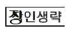

'창조적으로 혁신하는 대학, 세상의 변화를 선도하는 대학'
'혁신과 협력을 통한 동남권 최고 사학'
동 의 대 학 교
수 신 수신자참조
(경 유)
제 목 오미크론 관련 대면 수업 출석 및 출강 기준 안내
가. 적용시점
: 수업 3주차 시작일부터 대면 수업에 대해서만 한시적 적용
※ 3주차 시작일: 2022.03.16.(수)
나. 학생 출석 관련 기준
1) 출석 여부
| 유형 | 코로나19 관련 검사 | 출석 여부 | ||
|---|---|---|---|---|
| ①신속항원(자가키트) | ②PCR | |||
| 실시여부 | 결과 | |||
| 확진자 | 해당 없음 | - 대면 수업 출석 중지 (검체 체취일로부터 7일차 24:00까지) ※ 신속항원검사(전문가용) 결과『양성』판정일 경우, 즉시 확진자로 분류 |
||
| 밀접접촉자 유증상자 및 기타 |
실시 | 음성 | - | - 대면 수업 출석(수동감시대상) |
| 양성 | 실시 | ① PCR검사『양성』 판정일 경우, 대면 수업 출석 중지 (검체 체취일로부터 7일차 24:00까지) ② PCR검사 『음성』 판정일 경우, 대면 수업 출석(수동감시대상) |
||
※ 확진자 :『PCR검사』또는『전문가용 신속항원검사』에서『양성』판정을 받은 경우
2) 출석 인정 세부 기준
- 확진 및 백신접종
| 유형 | 출석 인정 신청 | 출석 인정 | 담당교원 제출서류 | 비고 |
|---|---|---|---|---|
| 확진자 | 사유 종료 후 7일 이내 |
- 대면 수업, 7일 * 검체 채취일 ~ 7일차 24:00(휴일 포함) |
보건당국의 문자 또는 관련 서류 | 기존 동일 |
| 백신접종 | 사유 종료 후 7일 이내 |
- 대면 수업, 2일 * 접종당일 및 익일(휴일 포함) |
보건당국의 문자 또는 관련 서류 | 기존 동일 |
| 백신접종 후 이상 증상자 (출석인정 연장 신청) |
사유 종료 후 7일 이내 |
- 대면 수업, 7일 * 6일 이상 초과 시 학사지원팀 문의 |
진료 내역서 | 기존 동일 |
-밀접접촉, 유증상 및 기타
| 유형 | 개인 검사 순서 | 출석 인정 | 비고 |
|---|---|---|---|
| 1 | 신속항원검사(자가키트) 결과, 『음성』 판정 | 대면 수업 출석 인정 불가 |
|
| 2 | ① 신속항원검사(자가키트) 결과, 『양성』 판정 ② PCR검사 결과, 『음성』판정 |
대면 수업 출석 인정 불가 |
※ PCR검사로 인한 미 출석에 대한 출석 인정은 담당교원의 재량으로 처리(1일 인정 가능) |
| 3 | ① 신속항원검사(자가키트) 결과, 『양성』 판정 ② PCR검사 결과, 『양성』판정 ※ 신속항원검사(전문가용) 결과, 『양성』 판정일 경우에는 즉시 확진자로 분류 |
대면 수업 출석 인정 가능 |
1) 출석 인정 신청 기한 : 사유 종료 후 7일 이내 |
| 2) 출석 인정 기간 : 검체 채취일 ~ 7일차24:00 (휴일 포함) |
|||
| 3) 수강과목 담당교원 제출서류 : 보건당국의 문자 또는 관련 서류 |
다. 교원 출강 관련 기준
| 유형 | 코로나19 관련 검사 | 출강 여부 | ||
|---|---|---|---|---|
| ①신속항원(자가키트) | ②PCR | |||
| 실시여부 | 결과 | |||
| 확진자 | 해당 없음 | - 대면 수업 출강 중지 및 수업유형 변경 신청 (담당수업 비대면(동영상) 또는 실시간화상수업 전환 휴・보강) - 격리기간 해제 이후 대면 수업 출강 진행 ※ 신속항원검사(전문가용) 결과 『양성』 판정일 경우, 즉시 확진자로 분류 |
||
| 밀접접촉자 유증상자 및 기타 |
실시 | 음성 | - | - 대면 수업 출강(수동감시대상) |
| 양성 | 실시 | ① PCR검사『양성』 판정일 경우, 대면 수업 출강 중지 - 대면 수업 출강 중지 및 수업유형 변경 신청 (담당수업 비대면(동영상) 또는 실시간화상수업 전환 휴・보강) - 격리기간 해제 이후 대면 수업 출강 진행 ② PCR검사 『음성』 판정일 경우, 대면 수업 출강(수동감시대상) |
||
※ 확진자 :『PCR검사』또는『전문가용 신속항원검사』에서『양성』판정을 받은 경우
라. 협조사항 및 용어설명
1) 철저한 개인 방역(마스크 착용, 손 소독 등) 지도가 요망됨.
2) 확진 및 기타 사유로 인해 대면 수업 결손 학생 및 학부모의 민원이 점차적으로
증가하고 있으므로 자가 학습 자료 제공을 통해 수강생의 수업권 보장에 각별히
유의하여 주시기 바람.
3) 기타 용어설명
- 밀접접촉자 : 본인이 방역당국으로부터 밀접접촉자로 지정 통보받은 경우
- 유증상자 : 본인의 판단으로 발열, 오한 등 오미크론 증상이 의심되는 경우
- 수동감시대상 : 관할 보건소가 제시한 권고 및 주의사항을 자율적으로 준수하면
서 감염 방지에 힘써야 하는 경우. 끝.
동 의 대 학 교 총 
| 수신자 | 대1-10,학생지원처장(학생지원팀장),부속기관장(보건진료소장),대외협력처장(국제교류팀장), 관리처장(안전관리팀장) |
| 학사지원팀장 | 이영환 | 교무처장 | 이경민 | 교학부총장 | 조재균 | 총장 | 03/15 한수환 |
| 협조자 |
| 수신 | 담당자 | 김선경 | ICT공과대학행 정지원실장 |
휴가 | ICT공과대학부 학장 |
김영철 | ICT공과대학 | 03/15 김현태 |
| 수신 |
| 시행 | 학사지원팀-309 | (2022.03.15) | 접수 | ICT공과대학행정지원실-162 | (2022.03.15) |
| 우 | 47430 | 부산광역시 부산진구 엄광로 176 | / | http://www.deu.ac.kr |
| 전화 | 0551-890-3041 | 전송 | 0505-182-6805 | / | dorage76@deu.ac.kr | / | 공개 |